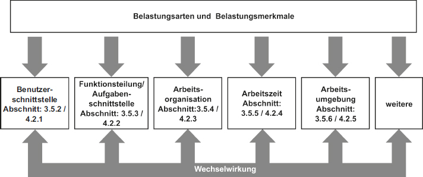

3 Ermittlung und Bewertung von Gefährdungen durch physische (körperliche) und psychische Faktoren bei der Verwendung von Arbeitsmitteln
3.1 Allgemeines
(1) Der Arbeitgeber hat im Rahmen der Gefährdungsbeurteilung körperliche und psychische Belastungen an der Schnittstelle Mensch – Arbeitsmittel zu berücksichtigen, insbesondere vor der Beschaffung von Arbeitsmitteln und Veränderungen bei der Arbeit mit einem Arbeitsmittel (§ 3 Absatz 2 BetrSichV).
Hinweis: Erläuterung für den Beschaffungsprozess von Arbeitsmitteln gibt die Empfehlungen für Betriebssicherheit EmpfBS 1113 "Beschaffung von Arbeitsmitteln".
(2) Bei der Gefährdungsbeurteilung ist auch die Gebrauchstauglichkeit von Arbeitsmitteln einschließlich der alters- und alternsgerechten Gestaltung zu berücksichtigen.
(3) Die Verwendung von Arbeitsmitteln ist so zu gestalten und zu organisieren, dass Gefährdungen für die Sicherheit und den Schutz der Gesundheit der Beschäftigten vermieden und verbleibende Gefährdungen möglichst gering gehalten werden. Bei der Erfüllung der Arbeitsaufgaben in unterschiedlichen Betriebszuständen sind die Gefährdungsfaktoren an der Schnittstelle Mensch – Arbeitsmittel nach Abschnitt 3.5 dieser technischen Regel besonders zu berücksichtigen.
(4) Die ergonomischen Zusammenhänge nach § 6 BetrSichV sind zu berücksichtigen, insbesondere:
- bei der Auswahl geeigneter Arbeitsmittel und bei der Festlegung von Schutzmaßnahmen zu deren sicherer Verwendung,
- bei der Gestaltung von Arbeitsablauf, Arbeitsumgebung, Arbeitsorganisation, Arbeits- und Fertigungsverfahren für den vorgesehenen Verwendungszweck der Arbeitsmittel,
- bei der Unterweisung der Beschäftigten und
- bei der Ermittlung der notwendigen Qualifikation der Beschäftigten.
(5) Bei Betrachtung der Schnittstelle Mensch – Arbeitsmittel sind erforderliche Materialien, Rohstoffe, Hilfsstoffe und Betriebsstoffe entsprechend § 2 Absatz 2 BetrSichV sowie Arbeitskleidung und persönliche Schutzausrüstung zu berücksichtigen.
3.2 Vorgehensweise
(1) Die grundsätzliche Vorgehensweise zur Gefährdungsbeurteilung erfolgt analog der TRBS 1111 "Gefährdungsbeurteilung", insbesondere nach deren Abschnitt 5.
(2) Zunächst müssen betrieblich verfügbare Informationen (u. a. technische Unterlagen des Arbeitsmittels, Betriebsanleitung) ausgewertet werden. Diese sind die Grundlage für die Ermittlung möglicher Gefährdungen.
(3) Für die Ermittlung und Bewertung von Gefährdungen durch körperliche und psychische Belastungen (Einwirkungen) an der Schnittstelle Mensch – Arbeitsmittel können verschiedene Methoden und Instrumente, auch vorausschauend, zur Anwendung kommen, insbesondere
- Beobachtung der Nutzung der Arbeitsmittel am Arbeitsplatz (ggf. mit Beobachtungsinterview),
- (standardisierte) Mitarbeiterbefragung,
- Analyseworkshop,
- Messverfahren,
- Simulation des Einsatzes eines neuen Arbeitsmittels und
- Erfahrungswissen aus vergleichbaren Anwendungen.
Die Mitwirkung der Beschäftigten ist dabei zu gewährleisten.
(4) Je nach Zielstellung, Komplexität des Arbeitssystems, betrieblichen Rahmenbedingungen, Art der Belastungen und erforderlichem Genauigkeitsniveau können unterschiedliche Methoden zur Ermittlung der körperlichen und psychischen Belastungen angewendet werden. Screening-Verfahren, orientierende Messungen und Labormessungen bilden unterschiedliche Genauigkeitsniveaus ab. Screening-Verfahren sind insbesondere geeignet, relevante Belastungsarten und -merkmale im Arbeitssystem zu identifizieren. Unter Umständen können auch mehrere Methoden und Vorgehensweisen Anwendung finden.
(5) Die Methoden zur Ermittlung und Bewertung physischer Belastung können in folgende Ebenen eingeteilt werden:
- Grobscreening, z. B. Basis-Check und Einstiegsscreening bei körperlicher Belastung,
- spezielle Screenings, z. B. Leitmerkmalmethoden (LMM),
- Expertenscreening, z. B. IAD-BkB (IAD Bewertung körperlicher Belastung),
- betriebliche Messungen, z. B. CUELA-Verfahren und
- Labormessungen/Simulation.
(6) Für den Bereich der physischen Belastung ist bei der Auswahl der Methoden darauf zu achten, dass sich die Ergebnisse der Bewertung in das Risikokonzept für körperliche Belastungsarten einpassen lassen und die Grundlagen für die Bewertung nach Tabelle 1 Beachtung finden (siehe auch AMR 13.2).
| Tab. 1
| Schutzmaßnahmen im Kontext von Risikobereichen körperlicher Belastung in Anlehnung an Anhang AMR 13.2: Risikobereiche der körperlichen Belastungsarten – Maßnahmen gemäß ArbMedVV
|
| Risikobereiche
| Belastungshöhe
| Wahrscheinlichkeit einer körperlichen Überbeanspruchung
| Mögliche gesundheitliche Folgen
| Maßnahmen
|
| 1
| gering
| unwahrscheinlich
| nicht ausgeschlossen
| Im Einzelfall sind Maßnahmen zur Gestaltung und sonstige ergänzende Präventionsmaßnahmen zu prüfen.
|
| 2
| mäßig erhöht
| selten
| Ermüdung, geringgradige Anpassungsbeschwerden, Kompensation in der Freizeit.
| Im Einzelfall sind Maßnahmen zur Gestaltung und sonstige ergänzende Präventionsmaßnahmen zu prüfen.
|
| 3
| wesentlich erhöht
| möglich
| Beschwerden (Schmerzen) ggf. mit Funktionsstörungen, reversibel ohne morphologische Manifestation.
| Maßnahmen zur Gestaltung der Arbeit und ergänzende sonstige Präventionsmaßnahmen sind zu prüfen.
|
| 4
| hoch
| wahrscheinlich
| Stärker ausgeprägte Beschwerden und/oder Funktionsstörungen, Strukturschäden mit Krankheitswert möglich.
| Maßnahmen zur Gestaltung der Arbeit sind erforderlich. Sonstige ergänzende Präventionsmaßnahmen sind zu prüfen.
|
(7) Methoden, die zur Ermittlung und Bewertung der Gefährdung durch körperliche Belastung eingesetzt werden, müssen in der Lage sein, die Wahrscheinlichkeit der körperlichen Überbeanspruchung, die möglichen gesundheitlichen Folgen sowie die Erforderlichkeit von Arbeitsschutzmaßnahmen beurteilen zu können. Dabei ist das in Tabelle 1 aufgezeigte Differenzierungsschema nicht zu unterschreiten.
Hinweis: Eine Übersicht zu den Methoden befindet sich in den Literaturhinweisen.
(8) Die Vorgehensweisen zur Ermittlung und Bewertung psychischer Belastung können wie folgt eingeteilt werden:
- Mitarbeiterbefragungen,
- Beobachtungsinterviews und
- Analyseworkshops.
Hinweis: Beispielhafte Methoden von Vorgehensweisen zur spezifischen Analyse der Mensch-Technik-Interaktion sind im Anhang 4 der DGUV Information 215-450 "Softwareergonomie" aufgelistet.
(9) Für den Bereich der psychischen Belastung sind bei der Auswahl der Methoden die Qualitätsgrundsätze für Instrumente zur Gefährdungsbeurteilung psychischer Belastung zu beachten (siehe Gemeinsame Deutsche Arbeitsschutzstrategie – GDA – Empfehlungen zur Umsetzung der Gefährdungsbeurteilung psychischer Belastung).
3.3 Ermittlung körperlicher und psychischer Belastungen
(1) Um ein ergonomisches, effizientes, flexibles, aber auch nachhaltig erfolgreiches Arbeitssystem zu gestalten, ist es wichtig, die Beschäftigten mit ihren Fähigkeiten, ihren Fertigkeiten, ihrem Leistungsvermögen und ihren Leistungsgrenzen in die Gestaltung mit einzubeziehen. Für jede Verwendung von Arbeitsmitteln ist systematisch zu ermitteln, welche körperlichen Belastungsarten und psychischen Belastungsmerkmale und deren Wechselwirkungen im Arbeitssystem relevant sind.
(2) Physische Belastung lässt sich in nachfolgende Belastungsarten unterscheiden:
- manuelles Heben, Halten und Tragen von Lasten,
- manuelles Ziehen und Schieben von Lasten,
- manuelle Arbeitsprozesse,
- Ganzkörperkräfte,
- Körperfortbewegungen,
- Körperzwangshaltungen,
- Vibrationen und
- weitere physische Belastungsarten, wie z. B. Sehbelastung.
(3) Psychische Belastung bei der Arbeit bezeichnet die Gesamtheit aller erfassbaren arbeitsbedingten Einflüsse, die von außen auf den Beschäftigten zukommen und diesen psychisch beeinflussen. Sie umfasst eine Vielzahl unterschiedlicher Einflussfaktoren. Je nach Art, Intensität und Dauer sowie in Abhängigkeit der persönlichen Voraussetzungen der Beschäftigten können diese Belastungsmerkmale u. a. zu Stress, Ermüdung oder herabgesetzter Wachsamkeit führen und langfristig gesundheitsbeeinträchtigende Wirkungen haben. Deshalb muss die Ermittlung und Bewertung die konkrete Ausprägung der Belastungsmerkmale berücksichtigen.
Zur Vermeidung von Gefährdungen durch psychische Belastung sind insbesondere die nachstehenden Belastungsmerkmale im Rahmen der Gefährdungsbeurteilung zu prüfen und ggf. durch Maßnahmen des Arbeitsschutzes zu gestalten:
- Arbeitsinhalt/Arbeitsaufgabe: Vollständigkeit der Aufgabe, Variabilität (Abwechslungsreichtum), Handlungsspielraum, Menge und Qualität der Informationen, Qualifikation des Arbeitnehmers, emotionale Inanspruchnahme,
- Arbeitsorganisation: Arbeitsintensität, Störungen/Unterbrechungen, Kommunikation/Kooperation, Kompetenzen/Zuständigkeiten,
- Arbeitszeit: Dauer, Erholungszeiten, Lage/Schichtarbeit, Vorhersehbarkeit/Planbarkeit,
- soziale Beziehungen: Kollegen und Kolleginnen, Vorgesetzte zu Mitarbeitenden sowie soziale Beziehungen zu Dritten,
- Arbeitsmittel: Arbeitsmittel- und Informationsgestaltung, persönliche Schutzausrüstung und
- Arbeitsumgebung: physikalische, chemische und biologische Faktoren, körperliche ergonomische Faktoren, Arbeitsplatzgestaltung.
3.4 Bewertung der Gefährdungen durch physische (körperliche) und psychische Belastungen
3.4.1 Kriterien zur Bewertung der Gefährdungen durch physische (körperliche) und psychische Belastungen
Es ist zu ermitteln, ob die in Abschnitt 3.3 genannten Belastungsarten und Belastungsmerkmale in ihrer spezifischen
Ausprägung und Dauer zu Gefährdungen für die Sicherheit und den Schutz der Gesundheit der Beschäftigten führen können. Zur Bewertung der ergonomischen Gestaltung des Arbeitssystems sind dabei folgende Kriterien heranzuziehen:
- Ausführbarkeit: Lässt die Gestaltung des Arbeitssystems eine Erfüllung der Arbeitsanforderungen innerhalb der Grenzen der menschlichen Leistungsfähigkeit der Beschäftigten, auch unter Berücksichtigung einer Alters- und Alternsgerechtheit, zu?
Beispiele: Erreichbarkeit von Stell- und Bedienteilen, Erkennbarkeit von Anzeigen und Signalen, erforderlicher Kraftaufwand.
- Schädigungslosigkeit: Ist bei der Verwendung von Arbeitsmitteln sichergestellt, dass die Sicherheit und der Schutz der Gesundheit der Beschäftigten nicht gefährdet werden?
Beispiel: Zum Einsehen eines Gefahrenbereiches muss ein Beschäftigter während der Schicht sehr häufig wiederkehrend eine ergonomisch ungünstige Haltung einnehmen. Dabei ist mit einer hohen Beanspruchung zu rechnen, die mittel- und langfristig zu einer Gesundheitsschädigung im Stütz- und Bewegungsapparat führen kann.
- Beeinträchtigungsfreiheit: Ist die Tätigkeit bei regelmäßiger Wiederholung über die gesamte Erwerbsbiografie ohne gesundheitliche Einschränkungen ausführbar bzw. sind die kurzfristigen beeinträchtigenden Beanspruchungsfolgen durch die gesetzlichen Arbeitspausen und die Freizeit auszugleichen?
Beispiel: Bei der Tätigkeit in einer Leitwarte können gehäuft Fehlalarme entstehen. Treten diese während der Bearbeitung von realen Störungen oder in intensiven Arbeitssituationen auf, können sie zu psychischen Beanspruchungsfolgen wie Stress führen.
- Zumutbarkeit: Sind die Arbeit und ihre Bedingungen durch die Gesellschaft und die Beschäftigten vor dem jeweiligen kulturellen Hintergrund akzeptiert?
Beispiel: Arbeitstische mit Knieblende (Schamblende) in Büros und Lehrräumen zur Wahrung der Privatsphäre.
3.4.2 Beurteilungsmaßstäbe zur Bewertung von Gefährdungen durch physische (körperliche) und psychische Belastungen
Bei der Bewertung der Gefährdung, unter Berücksichtigung der Kriterien ergonomischer Arbeitsgestaltung, sind die folgenden Beurteilungsmaßstäbe in der hier aufgeführten Hierarchie anzuwenden:
- Anforderungen, Maße und Werte in Technischen Regeln,
- gesicherte arbeitswissenschaftliche Erkenntnisse,
- Betriebliche Beurteilungsmaßstäbe: Sofern es in den vorangehenden Beurteilungsmaßstäben keine konkreten Aussagen gibt, sind für physische Belastungsarten und psychische Belastungsmerkmale an der Schnittstelle Mensch – Arbeitsmittel diese vom Unternehmer in einem betrieblichen Prozess konsensorientiert eigenständig zu entwickeln, zu vereinbaren und zu verwenden. Neben dem Erfahrungswissen der innerbetrieblich Fachkundigen und Beschäftigten, unter Hinzuziehung betrieblicher Daten (Beschwerden/Konflikte, Störungen Fehlerhäufungen, Berichte der Krankenkassen, Unfälle/Verletzungen etc.), können dabei insbesondere folgende Aspekte Berücksichtigung finden:
| a)
| Art, Ausmaß, Dauer und Häufigkeit einer Exposition,
|
| b)
| andere einwirkende Faktoren, durch die eine Gefährdung bei der Arbeit wirksam werden kann (z. B. Umgebungsbedingungen, Merkmalskombinationen),
|
| c)
| Berücksichtigung von Nebenaufgaben,
|
| d)
| Befähigung der Beschäftigten, eine Gefährdung rechtzeitig wahrzunehmen, einschätzen und dieser wirksam begegnen zu können und
|
| e)
| Abschätzung der Auswirkungen für Sicherheit und Schutz der Gesundheit beim Auftreten beeinträchtigender Beanspruchungsfolgen.
|
3.5 Beschreibung konkreter Gefährdungen durch körperliche und psychische Belastungen
3.5.1 Einordnung der Belastungsarten und -merkmale im Arbeitssystem
Im Rahmen der Gefährdungsbeurteilung an der Schnittstelle zwischen Mensch und Arbeitsmittel sind die unter Abschnitt 3.3 benannten Belastungsarten und -merkmale insbesondere für die folgenden Bereiche zu prüfen: Anordnung und Bedienung (Benutzerschnittstelle), Funktionsteilung und Aufgabenschnittstelle, Arbeitsorganisation, Arbeitszeit und Arbeitsumgebung. Unabhängig von diesen Bereichen kann eine Prüfung zusätzlicher Belastungsarten und -merkmale im Rahmen der Gefährdungsbeurteilung erforderlich sein. Abbildung 1 zeigt eine Übersicht über die Belastungsarten und -merkmale im Kontext dieser Bereiche und verdeutlicht deren Wechselwirkung.

Abb. 1 Belastungsarten und -merkmale im Kontext der Elemente des Arbeitssystems (mit Verweisen innerhalb dieser TRBS)
Die hier genannten Belastungsarten und -merkmale in ungünstiger Ausprägung können Beschäftigte so beanspruchen, dass Gefährdungen insbesondere durch Funktionsstörungen, Stress, Monotonie oder ermüdungsähnlichen Zuständen sowie daraus resultierenden Fehlhandlungen entstehen. Diese können auch zu langfristigen physischen oder psychischen Beeinträchtigungen führen.
3.5.2 Gefährdungen im Kontext der Auswahl, Anordnung und Bedienung von Arbeitsmitteln (Benutzerschnittstelle)
(1) Gefährdungen durch physische Belastung entstehen unter anderem, wenn die Informations- und Bedienelemente des Arbeitsmittels so gestaltet und angeordnet sind, dass bei seiner Verwendung
- es beim Beschäftigten zur körperlichen Zwangshaltung kommt (z. B. durch Bedienelemente oder Anzeigen über Schulterhöhe oder dauerhaft sitzende Tätigkeit),
- die Betätigung von mechanischen Stellteilen erhöhte Körperkräfte erfordert,
- im Sinne einer manuellen Lastenhandhabung häufige oder länger andauernde oder erhöhte Körperkräfte, -bewegungen und -haltungen erforderlich sind oder
Hinweis: Diese Gefährdungen können mit Hilfe der Leitmerkmalmethode (LMM) Körperzwangshaltungen, Manuelles Heben, Halten und Tragen von Lasten sowie der LMM Manuelles Ziehen und Schieben von Lasten beurteilt werden.
- erhöhte Sehanforderungen an die Beschäftigten gestellt werden, die zu einer stärkeren Belastung der Augen führen, insbesondere bei der Informationserfassung über Bildschirme.
(2) Gefährdungen durch physische Belastung entstehen unter anderem, wenn Arbeitsmittel so verwendet werden, dass
- häufige oder länger andauernde oder erhöhte Körperkräfte, -bewegungen und -haltungen erforderlich sind,
Hinweis: Diese Gefährdungen können mit Hilfe der LMM Manuelles Heben, Halten und Tragen von Lasten
sowie der LMM Manuelles Ziehen und Schieben von Lasten beurteilt werden.
- gleichförmige, sich häufig wiederholende Bewegungsabläufe und Kraftaufwendungen der oberen Extremitäten (Handhabung kleiner Werkzeuge, handgeführter Maschinen) erforderlich sind.
Hinweis: Diese Gefährdungen können mit Hilfe der LMM Manuelle Arbeitsprozesse beurteilt werden.
(3) Gefährdungen durch Vibrationen entstehen unter anderem bei der Verwendung des Arbeitsmittels durch deren direkte Übertragung auf den menschlichen Körper oder durch indirekte Übertragung auf andere Arbeitsmittel, z. B. Bildschirme. Dabei können
- Ganzkörpervibrationen insbesondere Rückenschmerzen und Schädigungen der Wirbelsäule verursachen,
- Hand-Arm-Vibrationen und Ganzkörpervibrationen insbesondere Knochen- oder Gelenkschäden, Durchblutungsstörungen oder neurologische Erkrankungen verursachen und
- negative psychische Beanspruchungsfolgen, wie psychische Ermüdung, Verminderung der Leistungsfähigkeit, Konzentrationsschwäche und Beeinträchtigung der feinmotorischen Koordination sowie Verschlechterung der optischen Wahrnehmung, z. B. Ableseprobleme durch Flackern oder Zittern, entstehen.
(4) Gefährdungen durch psychische Belastung entstehen unter anderem, wenn
- die Erfassung der Informationsmenge und -qualität den Beschäftigten zur Daueraufmerksamkeit zwingt, infolgedessen ermüdungsähnliche Zustände und herabgesetzte Wachsamkeit entstehen,
- die Aufbereitung der Informationsmenge und -qualität des Arbeitsmittels den Beschäftigten überfordert, sodass dieser Stress und psychische Sättigung erlebt,
- Arbeitsmittel fehlen, ungeeignet und mangelhaft gestaltet sind oder
- die persönliche Schutzausrüstung die Bedienung des Arbeitsmittels beeinträchtigt.
(5) Gefährdungen der Sicherheit durch Handlungsfehler (Detektions-, Eingabe- und Bedienfehler) können entstehen, wenn
- erforderliche Informationen objektiv fehlen, nicht wahrgenommen, verwechselt oder falsch wahrgenommen werden (Detektionsfehler),
- Bedienelemente verwechselt, nicht, falsch oder unbeabsichtigt betätigt werden (Eingabe- oder Bedienfehler),
- gefährliche Situationen durch Reflexhandlungen ausgelöst werden und
- Vibrationen, die bei der Verwendung des Arbeitsmittels auftreten, auf den menschlichen Körper oder andere Arbeitsmittel, z. B. Bildschirme übertragen werden.
3.5.3 Gefährdungen im Kontext der Gestaltung von Funktionsteilung und Arbeitsaufgaben
(1) Gefährdungen durch körperliche Belastungsarten bei der Funktionsteilung und Ausführung von Arbeitsaufgaben können insbesondere entstehen, wenn Beschäftigte intensiv (mit hoher Kraftaufwendung) häufig oder länger andauernd
- gleichförmige, sich wiederholende Bewegungsabläufe und Kraftaufwendungen verrichten,
- Ganzkörperkräfte aufbringen,
- Arbeitsmittel oder zu be- bzw. zu verarbeitende Gegenstände heben, halten oder tragen müssen oder
- Körperzwangshaltungen einnehmen oder Haltearbeit verrichten.
(2) Gefährdungen durch psychische Belastungsmerkmale bei der Funktionsteilung und Ausführung von Arbeitsaufgaben können insbesondere entstehen, wenn Beschäftigte intensiv, häufig oder länger andauernd
- unvollständige, partialisierte Tätigkeiten verrichten,
- über unzureichende Handlungsspielräume verfügen,
- abwechslungsarme Tätigkeiten mit einseitigen Anforderungen oder mit ständig wiederholenden Arbeitsgängen und einseitigen Anforderungen verrichten,
- mehrere gleichzeitige Tätigkeiten (Multitasking) verrichten,
- durch benötigte persönliche Schutzausrüstung unnötig beeinträchtigt werden,
- unklare Kompetenzen und Zuständigkeiten, Rollenunklarheit erleben,
- formelle und informelle Kontaktmöglichkeiten erschwert sind,
- eine unzureichende Passung zwischen Tätigkeitsanforderungen und Qualifikation erleben (Über- oder Unterforderung) oder
- mit traumatisierenden oder emotional überfordernden Ereignissen konfrontiert werden.
3.5.4 Gefährdungen im Kontext der Gestaltung der Arbeitsorganisation bei der Verwendung von Arbeitsmitteln
(1) Gefährdungen durch körperliche Belastungsarten bei der Arbeitsorganisation können insbesondere entstehen, wenn Beschäftigte intensiv (mit hoher Kraftaufwendung), häufig oder länger andauernd
- Arbeitsmittel oder zu be- bzw. verarbeitende Gegenstände heben, tragen, ziehen oder schieben,
- die Arbeitsaufgaben in der geforderten Arbeitsmenge bzw. -komplexität und Qualität regelmäßig nur mit sehr stark erhöhtem Aufwand (hoher Arbeitsintensität) verrichten,
- zeitlich eng getaktet und hauptsächlich kurze, sich häufig wiederholende, gleichförmige Tätigkeiten ausführen.
(2) Gefährdungen durch psychische Belastungsmerkmale bei der Arbeitsorganisation können insbesondere entstehen, wenn Beschäftigte intensiv, häufig oder länger andauernd erleben, dass
- die Arbeitsaufgaben in der geforderten Arbeitsmenge bzw. -komplexität und Qualität regelmäßig nur mit sehr stark erhöhtem Aufwand (hoher Arbeitsintensität) oder mit zusätzlichem zeitlichem Aufwand, der über die vereinbarte Arbeitszeit oder über die in § 3 Arbeitszeitgesetz genannten Arbeitszeitgrenzen hinausgeht, erfüllt werden können,
- ungeplante Unterbrechungen häufig und/oder andauernd die Aufgabenerledigung stören,
- Arbeitsaufgaben zeitlich eng getaktet sind und hauptsächlich kurze, sich häufig wiederholende, gleichförmige Tätigkeiten umfassen,
- die Möglichkeiten für Abstimmung, Kooperation und Kommunikation mit anderen Beschäftigten sowie die Unterstützung der Beschäftigten untereinander andauernd stark behindert sind oder
- die Qualifikation der Beschäftigten nicht zu den Anforderungen der Arbeitsaufgabe unter Berücksichtigung des Arbeitsmittels passt, oder die Abläufe bei der Verwendung nicht verständlich gemacht werden.
3.5.5 Gefährdungen im Kontext der Gestaltung der Arbeitszeit bei der Verwendung von Arbeitsmitteln
Gefährdungen durch psychische Belastungsmerkmale bei der Gestaltung der Arbeitszeit können insbesondere entstehen, wenn
- ihre Dauer sehr lang ist. Hierbei ist die zu erfüllende Arbeitsaufgabe und deren sonstige Gefährdungen zu berücksichtigen,
- ihre Lage atypisch ist (z. B. Wechselschichtarbeit, Abendarbeit, Nachtarbeit),
- die Lage und Länge der Pausen- und Ruhezeiten unzureichend ist,
- die berufsbezogene Erreichbarkeit erweitert ist oder
- die Vorhersehbarkeit und Planbarkeit der Arbeitszeiten ungünstig gestaltet sind.
3.5.6 Gefährdungen aus der Arbeitsumgebung bei der Verwendung von Arbeitsmitteln
Gefährdungen durch physische und psychische Belastungen infolge einer nicht auf die Tätigkeit mit dem Arbeitsmittel angepasste Arbeitsumgebung können unter anderem entstehen durch:
- Ungenügende oder unzureichend beeinflussbare Beleuchtungsbedingungen, die u. a. Augenbeschwerden und Kopfschmerzen als auch Ermüdung hervorrufen können.
- Unangepasste oder unzureichend beeinflussbare Raumtemperaturen. Bei Raumtemperaturen oberhalb des Behaglichkeitsbereiches können infolge von Ermüdung Konzentrationsmängel und Leistungsabfall auftreten. Hochgradige Wärmeeinwirkung kann auch zur Belastung des Herz-Kreislauf-Systems führen.
- Gehörschädigenden Lärm. Auch unterhalb eines Beurteilungspegels von 80 dB(A) können Geräusche die Gesundheit und Sicherheit gefährden, indem Kommunikation, Konzentrationsvermögen, Aufmerksamkeit und Gedächtnisleistung beeinträchtigt werden (extraaurale Lärmwirkungen).
- Unzureichende oder unzureichend beeinflussbare Gestaltung der Arbeitsstätte, insbesondere deren Arbeitsräume. Eingeschränkte Bewegungsflächen können Stress, Zwangshaltungen oder ungünstige Körperpositionen verursachen, in denen die Gefahr von Verletzungen bei der Verwendung des Arbeitsmittels deutlich erhöht sein kann.
- Gerüche, die Konzentration und Arbeitsleistung stören bzw. beeinträchtigen.
- Umgang mit gefährlichen biologischen oder chemischen Stoffen.
Hinweis 1: Gefährdungen durch psychische Belastung infolge einer nicht auf die Tätigkeit mit dem Arbeitsmittel angepasste Gestaltung sozialer Beziehungen können entstehen unter anderem durch
- mangelnde soziale Unterstützung durch Kolleginnen und Kollegen und/oder Vorgesetzte,
- häufige/schwere Konflikte und Streitigkeiten, verbale Aggressionen am Arbeitsplatz,
- Verletzungen der Integrität und Würde von Personen durch Mobbing, soziale Ausgrenzung oder
- Diskriminierung oder sexuelle Belästigung.
Hinweis 2: Siehe auch GDA-Empfehlung "Berücksichtigung psychischer Belastung in der Gefährdungsbeurteilung. Empfehlungen zur Umsetzung in der betrieblichen Praxis".